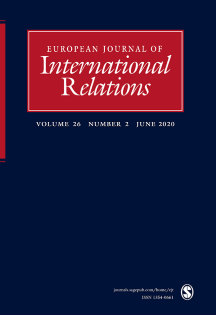

收录于合集

编者按
世界卫生组织（WHO）的区域化与再中心化一直是该组织改革的核心问题之一。本文从历史制度主义的理论视角出发，引入“权力驱动的路径依赖”概念，不仅解释了WHO为人诟病的区域化特点何以持久至今，还为国际组织设计研究注入了新颖的工具和方法。
作品简介
【作者】 Tine Hanrieder，现任德国WZB柏林社会科学中心全球人道主义医学研究团队主任，其兴趣领域包括全球卫生、国际政治社会学、南北关系。截至本文发表时，她在慕尼黑大学从事全球治理与公共政策相关的研究与教学。
【编译】 周玫琳（国政学人编译员，伦敦大学亚非学院历史系博士生）
【校对】 吴皓玥
【审核】 李玉婷
【排版】 杨 洋
【来源】 Hanrieder, Tine. (2015). The path-dependent design of international organizations: Federalism in the World Health Organization. European Journal of International Relations, 21 (1), 215-239.

期刊简介
 《欧洲国际关系杂志》 （European Journal of International Relations）是由赛吉出版公司（Sage Publications）代表欧洲政治研究联合会欧洲国际关系常设小组出版的季刊，发表国际关系学科全领域的同行审议学术文章，既关切理论争鸣的前沿，也注意国关研究社群中有当代和历史意义的主题。该刊2018年的期刊引用报告（JCR）影响因子为2.756。
国际组织的路径依赖设计：世界卫生组织的联邦主义
The path-dependent design of international organizations: Federalism in the World Health Organization
Tine Hanrieder
**内容摘要
**
围绕国际组织如何被“设计”的问题，本文提出一种历史制度主义叙述。作者认为，有意的制度设计受限于国际组织内路径依赖的权力动态。国际组织锁定并强化其次级单元的历史优势的现象，可以通过权力驱动的路径依赖解释。国际组织中早期的赢家利用成员国盟友的支持锁定其特权，并在一轮轮改革中攫取递涨的受益。由此，他们强化了国际组织设计中那些改革者们毋宁改变的特点。世界卫生组织（WHO）有着独特的联邦式设计，这给其区域办事处近乎免于总部监管的自治权，而本文的论点即借助这一历史案例研究得以申述。尽管不乏对WHO的区域化及其反复的集权化尝试的有力批评，WHO各区域的权力还是随时间推移增长了。本案例研究追溯了自20世纪40年代WHO成立以来关于其联邦式设计的路径依赖性纠葛。尽管关于国际组织的文献倾向于以建构主义分析探讨惰性和路径依赖，但是本文为国际制度中的惰性提供了一种理性主义解释。
文章导读
01
**导言
**
自1946年成立以来，在新的政治与技术诉求、其他全球卫生组织的竞争下，世界卫生组织（WHO） 经历了重重变革。通过容纳发展中国家的诉求、在疾病监控和爆发响应上拓展自身权威，WHO得以延续，但其最为吊诡的一项特点似乎一如从前。该特点就是区域化： WHO内一直有着六个半自治性区域机构的区分。 和其他国际组织相比，WHO这种联邦式结构不同寻常：其六个区域办事处不仅是执行部门，（彼此）也是半分离的机构。在政策制定上，WHO区域委员会的职能与世界卫生大会（WHA）平行。六个区域办事处的主任是被独立选举的，且在国家层面活动的管理上几乎享有自主权。因此，尽管WHO的政策在官方正式层面由WHA决定，但其实施极大依赖于区域的同意与合作。即便在联合国组织的序列中，WHO的区域化也是独树一帜的。有观点认为，WHO这种独特的区域化反映了该组织必须完成的去中心化的任务，例如在不同地区、不同卫生系统与条件下展开的技术合作。然而，有两个相关现象足以对这种功能主义解释提出怀疑。第一，WHO的区域机构设计正在经受愈发猛烈的批评，恰恰因为这种设计削弱了该组织在实地层面的有效性。被各区域分享的权力被斥为病态的“碎片化”：加剧内部摩擦与重复，阻碍政策实施，使组织无法承担其原则。第二，对WHO区域化的负面评价已敦促该组织反复进行颗粒无收的“再中心化”尝试。但与试图改革WHO联邦式结构、加强中央监管与协调的期望相悖，WHO的区域机构在财政、人事、项目权威上逐步获得更多的自主权，继而稳固了它们的独特地位。
尽管屡遭诟病，WHO的区域化怎么得到了加强？部分强大成员国与总干事的“再中心化”尝试频频失败，何以至此？对此， 本文提出一种有关国际组织设计的路径依赖（path-dependence）解释，以说明制度权力斗争如何干预“国际制度的理性设计”。 基于 历史制度主义（historical institutionalism）， 作者提出，WHO仍在进行的区域化是其成立时期（1946-1948）达成的历史协议所带来的一项路径依赖性结果。由于既存的泛美卫生局（PASB）的强硬立场，《世界卫生组织组织法》这一组织章程设立之初就带有区域主义偏向。这使得区域性机构获得一种权力优势，随后，该优势被决定规则和受益于区域化的成员国联盟所锁定（lock in），并随着区域性机构在数轮改革中获益更多而进一步加强。
对自我强化的WHO区域化的分析说明，在国际组织设计的过程中，历史因素的影响触及当下，约束着“当前条件”的影响与设计意图。除了这条宽泛的“路径依赖”论点，本文还提出，历史制度主义是有力开展制度设计分析的一种工具，它有助于把制度对行为体保护其机构特权（的行为）赋权并给予激励（的过程）理论化。与一些先行研究的观点不同，本文认为从分散的、制度内行为体权力地位的视角看，路径依赖的国际组织的结果可以是理性的。作者提出“ 权力驱动的路径依赖（power-driven path dependence，简称PDPD） ”这一工具性概念，用以从理性主义出发解释国际组织若有似无的病理（pathology）。由此，本文力图超越国际关系学科中探讨国际组织变化的理性主义与建构主义路径之间的分野。
02
路径依赖的国际组织设计
本节介绍了路径依赖的国际组织设计的理论逻辑，并探讨了识别历史（因素）决定性的方法论。历史制度主义是比较政治学和国际关系学共同的重要研究传统。由于历史制度主义枝繁叶茂、错综复杂，本文的论述仅以其对权力关系制度化的关注为基础，这一点是该传统的分析核心和对国际关系学理性制度主义的贡献。（1）理论：历史与对国际组织制度性权力的再关注在关于国际组织设计的理性制度主义（rational institutionalism）文献中，制度特点（institutional features）的选择是在功能（function）层面上被解释的，而权力是一种外生性条件。在理性制度主义分析中，最缺乏的是 对制度与权力间互动的概念化 ，权力与分配冲突一般不重要。与之相对，在关注正式制度（内）分配的历史制度主义文献中，权力占据中心地位。 在历史制度主义者看来，制度是把历史斗争的结果永久化的结构。由于其权力密集的本质，制度本身是其未来演变的决定因素。 作者将这种研究制度变化的方法称为 “权力驱动的路径依赖（PDPD）” 。该方法以三个明确的假设为基础，它们分别和制度性权力、行为体取向和制度变革有关。 第一，PDPD强调正式制度锁定政治权力。 制度授予参与者正式权利与否决机会，并为其提供获取组织资源与信息的特权通道。因此，历史上的赢家可以通过制度化来保存其初始优势。联合国安理会即为政治权力制度化的一则显例，其中的历史赢家是五大国。但是在国际组织中，除了成员国，官僚单位也会保存历史优势。 第二，与第一点相关，PDPD假设在政治制度中合作的行为体对制度性权力敏感。 在制度中，行为体不只关心“经济”收益，也在乎“政治”权力。此假设将PDPD与理性主义合作理论中的功能主义论述区别开来。PDPD不认为制度粘性（institutional stickiness）违背理性选择本身，而是关注制度条件如何塑造行为体战略。 第三，PDPD假设制度不只固化过去的选择，还会决定它们各自的发展（变化）。 在此，“路径依赖性”变革不是“不变”，也不是由“关键节点（critical junctures）”带来的变化，而是一种“定向变革（directed change）”：路径依赖性制度特点是被 锁定 的、难以逆转的，所以随着制度发展，它们会被 强化 。这种观点的基础有二：一，政治制度本身就是动态的；二，定向变革意味着并非所有制度转型都会发生，变革的“方向”是被既存的权力结构所影响的。具体到国际组织而言，一方面，外生性变化要求国际组织主动调适自身与环境的关系；另一方面，有地位优势的次级单元会在一轮轮改革中变得更强，早期的制度特点总体上会被强化。（2）方法：如何研究路径依赖的区域化从PDPD角度探究WHO的发展，在方法上要注意以下两点。第一，采取过程性（processual）路径，评估长期内是什么转型留在了组织内。如果把区域化和集权化二分，WHO的演变是一个连贯的区域化过程。WHO历史上屡屡成功的区域化动议和频频失败的集权化尝试，是定向的路径依赖性变革的首个有力指标。第二，衡量区域化转型在多大程度上由制度限制（constraint）而非（有意）选择（choice）导致。难点在于，制度的效果不像有意的选择那样直白，可制度转型又是由有意志的行为体执行的。因此，本文接下来探究的设计尝试都发生在WHO的三大设计改革节点上：彼时，有意选择和制度限制都发生了直接交锋。在三个小案例研究中，作者都对设计与改革目标、制度结果和后续逆转结果的尝试做了区分。这种对目标和结果进行时序化区隔的方法，使得对环境敏感（context- sensitive）的反事实（counterfactual）论断成为可能，即可能推测“没有路径依赖的话会产生什么制度结果”。本研究为了聚焦明确的设计与改革，在讨论中对路径依赖设置了一种苛刻的标准，即只在路径依赖被有意志的设计者明确挑战时才对其展开探究。但实际上，路径依赖在许多不起眼的事件中也在运作，这是本文力所不及的，需要后续研究补充。
03
**WHO的区域化道路
**
本节分析WHO的区域化道路，主要聚焦其三大“设计”节点：成立之时（1946-1952）；哈夫丹·马勒（Halfdan Mahler）任总干事时期（1973-1988）的初级卫生保健改革；格罗·哈莱姆·布伦特兰（Gro Harlem Brundtland）任总干事时期（1998-2003）的"同一个WHO"改革。 历史分析表明，早在发轫阶段，制度性权力已对WHO的初始设计产生影响。WHO不是凭空诞生的，而是吸纳了多个在两次世界大战间共存的国际卫生组织的遗产。制度性遗产约束着WHO的创始人，其中泛美卫生局（PASB）的影响最为卓著，甚至直接导致WHO采用了出人意料的区域化结构。20世纪70-80年代的初级卫生保健（PHC）改革强化了这一结果，因为各区域在改革过程中获得了更多权力。在这两个时期后，尽管有一些不成功的再中心化尝试，力图限制地区自治权的最协同合作的尝试是千禧年前后提出的“同一个WHO”改革。这次尝试的失败（进一步）证明了WHO内区域权力的锁定。在下文三个小节中，作者用三个步骤呈现上述三个案例研究：（a）设计或改革的目标；（b）设计或改革的实施；（c）对设计或改革成果的批判。 （1）超越章程的区域建设：泛美卫生局（PASB）的遗产WHO的设计工作发轫于1945年旧金山会议之后。英美法与南斯拉夫四国为其筹备章程（亦称组织法）草案。虽然他们的提案都认为WHO设计中会有区域性层次，但是他们在区域自治权的大小问题上分歧显著。英法认为区域办事处应该只提供流行病信息，在区域性事务上给总部提建议；南斯拉夫在此问题上不决；而美国则提出所有区域办事处都应与WHO紧密一体，但负责泛美地区的PASB除外。PASB的加入成为WHO章程起草协商中最具争议的问题。这导致WHO实际的区域化程度大大超出了章程条款（的规定）。（a）章程设计
PASB成员的数量和立场极大影响了WHO章程的区域设计。虽然该设计为PASB预设了一个过渡期，但其他区域性机构要被完全整合、受中央管理。显然，这一妥协本身就是路径依赖的，因为它顾及既存的制度性承诺。通过在WHO成立阶段协调组织拉丁美洲阵营，PASB的制度性权力得以彰显，这防止了WHO立即解散PASB。后来，PASB路径依赖的制度性权力强于WHO的章程条款，并在组织内掀起一场始料未及的区域化转变。
（b）设计的实施在成功否决了自身与WHO的整合之后，PASB继续利用其领先的制度性优势。后续的制度建设过程总有着意料之外的时间差：一方面，PASB利用WHO章程无法获得正式批准的两年（1946-1948年）全面修订自己的章程（改为泛美卫生组织PASO的一部分），加强筹资，令PASB更难为WHO所吸收；另一方面，WHO只能成立一个临时委员会来与PASB谈判，双方协议决定PASO机构是WHO在美洲的区域性机构，但同时保持独立。自此，PASB的制度性权力有效击败了WHO的章程设计。从1948年开始的区域建设过程，在区域化上也大大超出了章程设计。尽管章程规定了其从属性角色，其他五个新区域性机构模仿了美洲的先例，尤其是在各区域办事处主任的任命上偏离了章程程序，采取了先任命、再告知、总部循例确认的路径。（c）锁定WHO早期区域化的赢家是各区域的受援国。它们需要通过各区域办事处来获得更多经费，区域办事处也借此把自己打造为受援国的分配机构。从20世纪50年代起，它们阻拦了一系列再中心化的尝试，区域化挺过了第一轮抨击。 本小节力在说明，WHO成立的历史证实了路径依赖在国际组织发轫期的重要性。WHO章程与实际的区域自治体系之间的差距说明了PASB的影响力。20世纪50-60年代的中心化尝试失败，则进一步证实了地区化道路的稳健。 （2）初级卫生保健（PHC）及其次要效应自1973年马勒担任总干事，WHO开始主推初级卫生保健运动（PHC）。该设想得到广泛拥护，在1978年成为WHO的官方政策。但是，这次改革主要对WHO产生了次要（制度性）而非首要（政策性）影响：其实施强化了区域办事处的地位，但没有改变在发展中世界采取的卫生政策。（a）改革的议程PHC是一项针对去殖民化浪潮后（发展中国家）卫生发展危机的反应。在PHC的改革设计中，它是一种自下而上、以社群为中心的基本卫生系统改善策略，应当寄托于广阔多元的卫生系统转型议程，且应将资源从昂贵的医院与医学校转投向国家卫生体系的跨部门规划上。（b）改革的实施PHC的运转需要在各国把贫瘠的国家资源进行理性规划，这种伸向国家层次的努力让既存的区域化体系备受需要。成员国和区域机构都愈发重视与对方的关系，因此区域办事处不愿因为总部施加的政策而改变其原有的实践。面对区域办事处的抵抗和各区域主任所拥有的的实际否决权，马勒为了PHC的推进，采取了劝说和积极激励相结合的策略，并公开批评区域化继续深入的长期风险。这刺激了一些实力强大的WHO成员国尝试再中心化。（c）锁定与马勒的观点不同，深入的区域化也有拥趸：区域办事处新获得的管理权威加强了成员国对它们的忠诚；来自发展中国家的WHO执委会委员也更依赖各自区域的主任，而非（中央的）委员会。在面临这种局面的1987年，即便有美国领导的联盟在WHO执委会发起把办事处主任任命权收归总干事、加强中央行政管控的倡议，这新一波限制区域权力、再中心化的尝试还是未能成功。 综本小节所述，初级卫生保健（PHC）改革说明，在国际组织改革过程中，组织内的否决权持有者能从其权力地位获取越来越多的收益。区域机构本被赋予更多权力以支持PHC，但此举失败了，因为它们并未施行PHC的议程事项。但这场改革在结构层面有长远影响，即赋予区域办事处实操上的自治性。这场路径依赖的改革结果不可逆转，因为区域化的批判者们在其后更无法扼制区域权力。 （3）布伦特兰德的“同一个WHO”计划遭遇区域抵抗1998年，当布伦特兰德成为WHO总干事，她被寄予彻底重构组织的厚望。她在较短的任期内也的确拿出了引人瞩目的成果。但本文主要关注她所领导以整合区域为目标的“同一个WHO”改革。（a）改革的议程布伦特兰德甫一上任，就设置“过渡小组”计划改革，其改革核心就是“同一个WHO”。这项改革旨在纠正多方面的碎片化问题，包括众多项目与活动之间、总部与区域之间的碎片化。为了给WHO注入更多活力，改革者也立刻开展职员调整。此外，50多个总部项目被分类为9个主体性“集团（cluster）”，其主任直接对总干事负责。（b）改革的实施"同一个WHO"改革在整合区域活动上未取得成功。不满于总部对其项目活动的干涉，各区域办事处在"集团"的预算程序上几乎不予合作。总部与区域间的沟通如此之差，令WHO的内部评估也认为“同一个WHO”未能实现。布伦特兰德在短短一个任期后放弃再参选，据推测，该决定与她认为难以改变WHO问题重重的区域结构有关。（c）后续与余波截至目前，布伦特兰德是最后一个向WHO区域化道路发起挑战的改革者。尽管WHO的“联邦式基因”依然屡受抨击，区域的权威已被牢牢固化。2010年以来的新动向表明，WHO的联邦式体系会进一步向区域自治的方向前进。 本小节表明，“同一个WHO”改革即便未给区域更多权力，也没有限制区域的权威。WHO的区域化道路在历史挑战面前是稳定的，但并非完全确定或不可逆转的。路径依赖过滤（而非消灭）了外来权力（例如外来的领袖布伦特兰德）对WHO制度轨迹的影响。
04
**结论
**
本文运用历史制度主义概念，丰富了对国际组织设计中的权力的研究，尤其是内生的制度性权力来源。作者引入的“路径依赖’概念，尤其是“权力驱动的路径依赖（PDPD）”视角，提供了一种关于国际组织惰性的理性主义叙述。关于WHO区域化的案例研究支持了上述论点，但这毕竟是当代国际组织中区域化、去中心化的极端案例。对国际组织研究领域而言，加强对历史上国际组织制度机制演变的研究大有裨益。
**译后记
**
作为新制度主义的主要流派之一，历史制度主义已成为当代政治科学领域的一种主要分析范式。在国际组织研究中采用历史制度主义的理论视角并不鲜见，本文提出的“权力驱动的路径依赖（PDPD）”概念的核心假设也与该范式的传统相吻合。但本文的理论贡献在于融汇取新：为历史制度主义所重视的制度内权力与制度关系，如何能打破国际组织设计研究中建构主义和理性主义之间的藩篱？在这种理论意识的指导下，本文提出国际组织改革的惰性与困境未必只能从组织“文化”的角度讨论，在历史进程中创设的制度内权力关系令国际组织改革的困境得到了理性主义解释。作为本文的研究案例，WHO区域化特点形成与固化的历史，一方面服务于理论创新的实证部分，另一方面也为该组织广受诟病的改革困境提供了一种新颖的解释角度。令译者略感遗憾的是，本文在探讨WHO初创时期形成的区域化为何也是路径依赖的结果时，可能由于材料或篇幅所限，过于偏重泛美卫生局（PASB）的示范作用，而对其他五个区域鲜有着墨，仿佛它们只是遵循美洲开创的前例。其实，其他区域对自治权力的争取也有其自在的逻辑。例如，设于菲律宾马尼拉的西太平洋区域办事处，虽然不似PASB那样明显抗拒被WHO整合，但其人员构成和信息网络其实依托于两次大战期间形成的国际联盟卫生组织远东局和远东热带医学会，也有相对独立的权力诉求。如此看来，WHO路径依赖的区域化未必只是PASB的遗产，而是各区域卫生治理制度进行世界性整合的结果。诚然，这些丰富的历史细节也许交予历史学者处理更为适宜，但持历史制度主义范式的政治学者或许也需警惕：历史对当代现实的解释固然重要，对历史片段的择取却含有极大的主观成分。当历史成为实证研究的材料，作者有必要解释为何选择历史的某一面向，而非将过去的事件视作历史本身。

本文由国政学人独家编译推荐，文章观点不代表本平台观点，转载请联系授权。

添加 “国小政”微信，获取最新资讯


好好学习，天天“在看”

国政学人
支持学术公益与知识传播
微信扫一扫赞赏作者 __赞赏
已喜欢，对作者说句悄悄话
取消 __
发送给作者
发送
最多40字，当前共字
上一页 1/3 下一页
长按二维码向我转账
支持学术公益与知识传播
受苹果公司新规定影响，微信 iOS 版的赞赏功能被关闭，可通过二维码转账支持公众号。